|

7.4
報表設計平台操作 (design framework)
進入報表設計模式 (design mode)
返回主控制面板 (exit to control panel)
配置元件 (layout components)
元件選取、移動、屬性編輯 (select、move、edit
components)
元件對齊 (alignment)
元件複製、拷貝、貼上 (duplicate、copy、paste)
元件偏好設定
(component preference)
進入預覽列印模式 (preview mode)
瀏覽 Java™ 程式碼 (Java™ source code)
重讀圖檔 (reload Images)
jLIVE
Builder™ 報表系統 (report system) 是視窗畫面 (form design)
設計的延伸，列印資料和範圍皆來自視窗畫面的物件。這種設計方法，必須以視窗畫面中的資料來源
(data source)
為思考方向，因為在每一張報表中皆可指定以一個主要的資料來源為記錄移動的參考，並且在視窗畫面中的元件也會同時反應資料來源移動的影響。這種設計方式，非常有效率；如果設計者以物件的理念來設計應用程式，將會得到最大的效率。以一個 (客戶管理)
視窗畫面下的報表設計為例，設計者可以設計出和視窗畫面操作同步的報表，比如說，在客戶管理操作【查詢】某一區域的客戶，在視窗畫面中顯示的資料，也等於是列印到報表的資料(某一區域的客戶資料)。
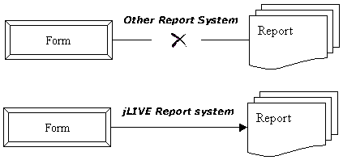
進入報表設計模式 (design mode)
進入報表設計畫面，可以在【控制面板】按下 設計
(
進入設計模式 )，或是點選該報表，然後按滑鼠右鍵，選擇設計，如下圖所示。
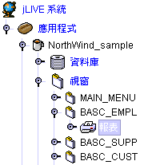
-
功能列 (menu bar)：選單功能列。
-
元件列 (printable component)：列印元件列。
-
表頭 (header)：報表的標題區。
-
表頭基準線 (separator)：用來區分表頭和表身的分界線。
-
表身 (content)：列印資料顯示區，元件與表頭基準線之距離會決定兩筆記錄之間的距離，系統中是以元件最上緣的定位點與表頭基準線距離來決定下一筆的相隔距離
。
-
表尾基準線 (separator)：用來區分表身和表尾的分界線。
-
表尾 (footer)：報表的結尾。
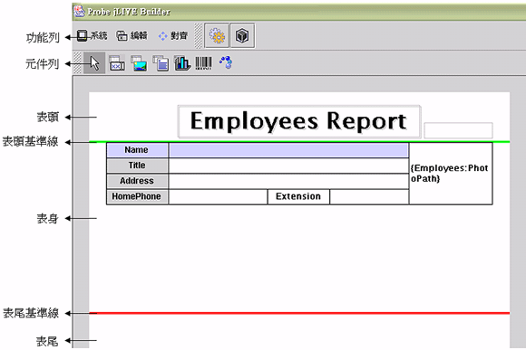
▲Top
返回主控制面板 (exit to control panel)
-
系統 (system)：
-
返回
(back to console )：離開設計畫面，回到控制面板。
-
儲存修訂 (save modified)：
在設計模式下，所有的變更都尚未儲存，因此當程式有類似迴圈的邏輯時，建議在測試執行前先行存檔動作，以免進入無窮迴圈後，程式必須強制中止而無法存檔，將會喪失存檔前的所有設計內容。
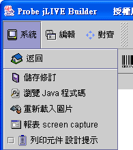
-
報表 screen capture：在報表設計期，將
報表快照
(snap shot) 並存成圖檔(*.png)。執行時系統會出現訊息視窗，詢問置放圖檔的位置與檔名。預設存放於【應用程式目錄】【doc】【screen】目錄下以
報表名稱為檔名。
-
列印元件設計提示 (tool tips) ：設計時滑鼠移動至元件時，是否出現屬性提示視窗
(tool tips)。
▲Top
配置元件 (layout components)
以滑鼠點選所需元件，然後將滑鼠移至報表上，此時滑鼠游標會顯示十字符號，再將滑鼠移到所要的位置上，點滑鼠左鍵置放即可。
-
 通用報表元件
(Generic printable object) 通用報表元件
(Generic printable object)
-
 圖片報表元件 (Image printable object) 圖片報表元件 (Image printable object)
-
 備忘錄報表元件 (Memo printable object) 備忘錄報表元件 (Memo printable object)
-
 統計圖報表元件 (Chart printable object) 統計圖報表元件 (Chart printable object)
-
 條碼報表元件 (Barcode printable object)
條碼報表元件 (Barcode printable object)
-
 跳頁報表元件 (Pagebreak printable object)
跳頁報表元件 (Pagebreak printable object)
▲Top
元件選取、移動、屬性編輯 (select、move、edit
components)
-
選取
(select)：
-
移動
(move)：
-
編輯
(edit)：
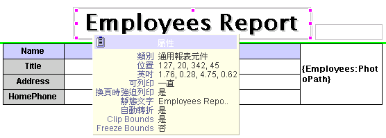
▲Top
元件對齊 (alignment)
對齊 (alignment)：必須先選取多個元件，才可以使用此功能。選取的方式，以按住滑鼠左鍵並拉出涵蓋的範圍，放開滑鼠後，被選取的元件會以綠框標示。可以再以滑鼠，點選未標示綠框的其他元件加入選取；或點選已加入的元件將其排除於選取範圍。
-
復原 (undo )

-
靠視窗左邊界對齊 (alignment to form left)

-
靠視窗上邊界對齊 (alignment to form top)
-
靠視窗右邊界對齊 (alignment to form right)

-
靠視窗下邊界對齊 (alignment to form
bottom)

-
水平靠左 (horizontal left)
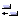
-
水平靠中 (horizontal center)
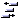
-
水平靠右 (horizontal right)
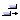
-
水平置於視窗中間 (horizontal form center)
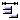
-
水平平均分配距離 (horizontal equal space)
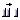
-
垂直靠上 (vertical top)
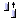
-
垂直靠中 (vertical center)
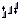
-
垂直靠下 (vertical bottom)
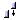
-
垂直置於視窗中間 (vertical form center)

-
垂直平均分配距離 (vertical equal space)

-
刪除 (delete)

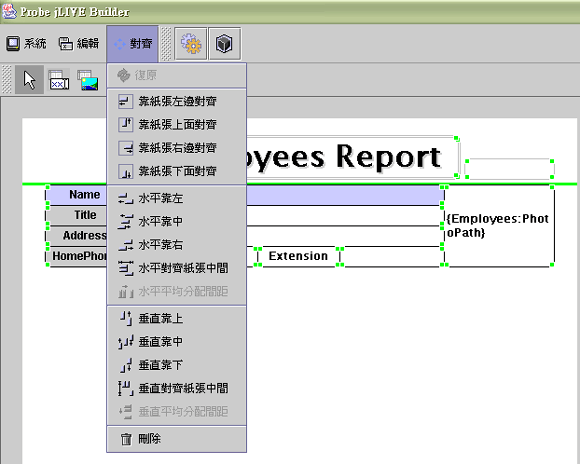
▲Top
元件複製、拷貝、貼上 (duplicate、copy、paste)
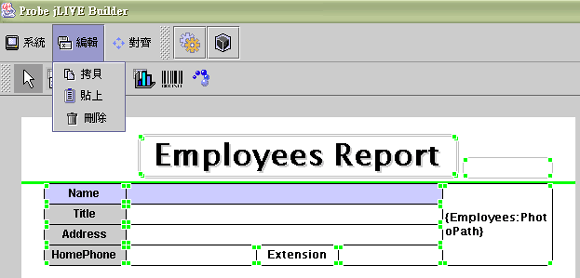
▲Top
元件偏好設定
(component preference)
設計師在工作視窗下配置元件
(layout component) 時，系統會以預設的元件屬性
(大小、外觀、字型)
配置元件。設計師可以隨時將編輯過的元件，按滑鼠右鍵選擇【存成個人喜好】選單功能，將其屬性設定為預設元件屬性，下一次執行配置時，即會以新的預設屬性配置該類別元件。
jLIVE
Builder™ 的系統預設元件屬性偏好設定檔 prefer.xml 位於
jLIVE\xml\ 目錄下，每當設計師新增一個應用程式時，jLIVE
Builder™ 會將 prefer.xml 複製到該應用程式路徑
\xml\ 目錄下，並更名為 _prefer.xml，所以 jLIVE Builder™
的每一個應用程式皆有獨立的元件屬性偏好設定檔。設計師亦可將應用程式的元件屬性偏好設定檔
_prefer.xml 回存到jLIVE\xml\ 目錄下，更名取代原有的
prefer.xml，系統在下一次新增應用程式時，即以其為預設元件屬性偏好設定檔。
多人協同開發應用程式時，系統規劃師可以先行設定各個元件的預設偏好
_prefer.xml，並將其分發至工作群組的各個設計師，應用系統開發時，每一位設計師的視窗模組即能有一致的外觀與介面。
▲Top
進入預覽列印模式 (preview mode)
點選確定後出現預覽的畫面。
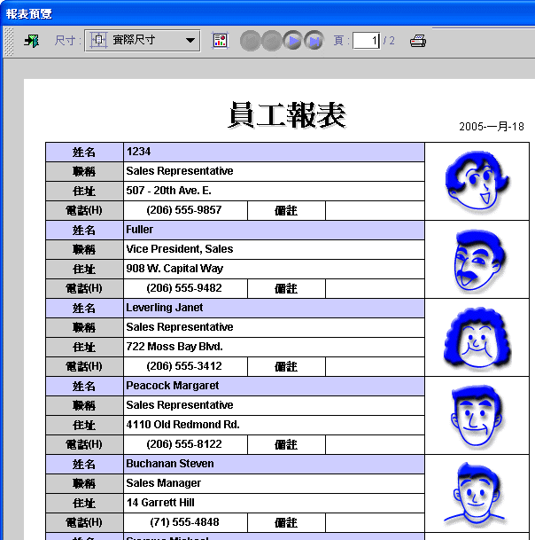
-
離開預覽 (exit)：離開預覽作業。
-
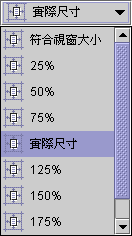
預覽尺寸 (preview size)： 選擇預覽報表尺寸。
-
 存成圖檔 (snap shot)：在報表
執行期，將
報表快照
(snap shot) 並存成圖檔(*.png)。執行時系統會出現訊息視窗，詢問置放圖檔的位置與檔名。 存成圖檔 (snap shot)：在報表
執行期，將
報表快照
(snap shot) 並存成圖檔(*.png)。執行時系統會出現訊息視窗，詢問置放圖檔的位置與檔名。
-
 首頁
(first)：預覽首頁。
首頁
(first)：預覽首頁。
-
上一頁
(previous)：預覽上一頁。
-
 下一頁
(next)：預覽下一頁。
下一頁
(next)：預覽下一頁。
-
尾頁 (last)：預覽
尾頁。
-
 目前頁 (current)：目前此頁
與總頁數。頁數由 1 起算，在編輯元件中可以輸入頁數且按下【Enter】鍵，輸入非數字及小於 1
為錯誤，輸入大於總頁數時，系統會計算至總頁數即停止且更正使用者輸入的頁數。
目前頁 (current)：目前此頁
與總頁數。頁數由 1 起算，在編輯元件中可以輸入頁數且按下【Enter】鍵，輸入非數字及小於 1
為錯誤，輸入大於總頁數時，系統會計算至總頁數即停止且更正使用者輸入的頁數。
-
 列印 (print)：執行列印作業
，按下此鍵會出現列印設定頁。
列印 (print)：執行列印作業
，按下此鍵會出現列印設定頁。
-
一般 (general )
-
列印服務 (print service)
-
名稱 (name)：印表機名稱。
-
狀態 (status)：目前工作狀態。
-
類型 (type)
-
資訊 (info)
-
列印至檔案 (print to file)
-
列印範圍 (print range)
-
全部 (all )：列印全部頁面。
-
頁面 (page)：選擇列印範圍。
-
份數 (copies)：列印總份數。
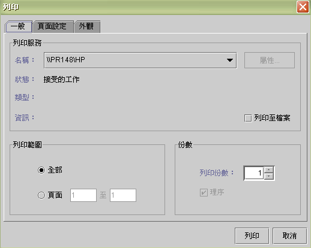
-
頁面設定 (page setup)
-
媒體 (media)：
-
大小 (size)：列印紙張大小。
-
來源 (source)：列印紙張來源。
-
方向 (orientation)：
-
直向 (portrait)
-
橫向 (landscape)
-
反向直印 (reverse portrait)
-
反向橫印 (reverse landscape)
-
邊距 (margins)：
-
左邊距 (left)
-
右邊距 (right)
-
頂端邊距 (top)
-
底部邊距 (bottom)
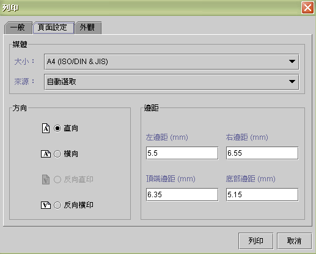
-
外觀 (appearance)：
-
色彩外觀 (color appearance)：
-
單色 (monochrome)
-
色彩 (color)
-
品質 (quality)：
-
草圖 (draft)
-
正常 (normal)
-
高 (high)
-
邊 (sides)：
-
單面 (one side)
-
翻轉 (tumble)
-
雙面列印 (duplex)
-
工作屬性 (job attributes)：
-
標題頁 (banner page)
-
優先權 (priority)
-
工作名稱 (job name)
-
使用者名稱 (user name)
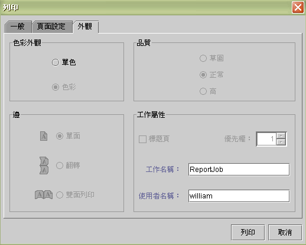
▲Top
瀏覽 Java 程式碼 (Java™ source code)
按下瀏覽按鍵後，系統會先將目前的設計視窗存檔，之後產生此視窗的 Java™
程式碼，在程式碼的瀏覽視窗中，不能編輯修改原始碼。 jLIVE Builder™ 提供程式設計師自行加入
Java™ source code
，並保留此段自行加入的程式碼。加入的方法為利用註解標籤 //<reserve>
和 //</reserve>
將自行加入的程式內容用此標籤包住。自行加入程式後如果再進入jLIVE Buider™ 編輯設計，jLIVE Builder™ 在產生
Java™ source code ( *.java ) 時將會把以 //<reserve>
和 // </reserve>
標籤包住的程式碼，放在 source code 的最下面並將其標示成註解，並不會覆蓋或刪除掉，設計師必須重新將此段程式，安置於適當的地方， 然後再將
*.java compile 成 class。
▲Top
重讀圖檔 (reload Images)
在設計時，修改、刪除、增加圖片 (image file) 到
preloadimages 或是 images
等目錄，必須重讀圖片，才可以使用那些圖片。
▲Top
Copyright © 2001~
2004 Probe Technology . All Rights Reserved.
Questions, comments,
and suggestions to Service@probe.com.tw
|